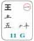
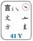
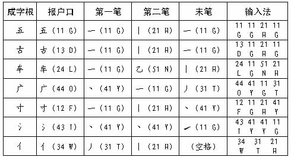
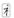
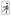
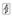
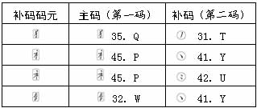
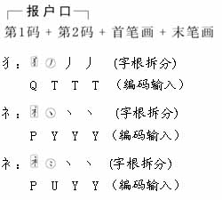
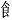

目录
对于从未学过五笔字型的人士，我们建议最好“一步到位”直接学习新世纪版五笔字型， 因为新世纪版（第三代）是五笔字型编码技术的“终极版”，其中的字根和字根键位以后不再改动了。
对于原来已学会86版、98版的人士，只要仔细看一看第三章第六节（前页）的新世纪版与86版字根变动表， 也不难自然而然地过度到新世纪版。原因是，新世纪版完全符合规范、更加好记好用， 三个版本的字、词“取码法”及识别码，也都是相同的。
一些人士认为五笔字型“难学”，这是缺乏分析的。
学习起来并不难。只要按规律记住25个字母键上的125种字根，即字根键位图（可以背一背助记歌帮助记忆）， 再按照编码流程图所示的规则拆字和取码，就能很快学会。
其实，用五笔字型打字，就等于在键盘上用“字根”写字，只不过是按一下键，就等于“写了一个字根”罢了。 只要会写字，一两天学会编码并不难，真正难的是打字速度！因为多数中国人没有从小练好英文打字指法， 十个指头不听话，年龄越大，越不听话！怎能打字？但只要方法得当又常加练习，每分钟输入50～80个字是不难的。
学一阵子，用一辈子！
上一章掌握了字根所在的区和键位，下面学习拆字和取码法。

五笔字型字根键盘上，本身是汉字的字根，叫“键面字”。“键面字”分为三类，其输入法分别是：
1、键名字的输入
每一个键位上，最左上角的那个黑体字的码元，叫键名字，它是“一键之名”。以G键为例， 其左上角的字根“王”便是“键名字”或“键名”。
二、键名字“王”；键名字“言”。
“键名字”的输入法是：把所在的键连打4下。例如：
1区1位键名：王 11 11 11 11 （GGGG）
3区2位键名：白 32 32 32 32 （RRRR）
4区5位键名：之 45 45 45 45 （PPPP）
5区3位键名：女 53 53 53 53 （VVVV）
在王码五笔字型中，键名码元有25个。
1区：王土大木工（对应键位：GFDSA）
2区：目日口田山（对应键位：HJKLM）
3区：禾白月人金（对应键位：TREWQ）
4区：言立水火之（对应键位：YUIOP）
5区：已子女又纟（对应键位：NBVCX）
2、成字字根的输入
键面上除键名外，凡本身是汉字的码元，叫“成字字根”或“成字码元”。其输入法是： 先打一下它所在的键（这一下俗称“报户口”），再打第一个、第二个， 以及它的最末一个单笔画，最多4下，不足4下，补一个空格键。例如：
二、
当输入十、七、九、二、几、儿、乃、刀……这一类只有2个笔画的字根时，“报户口”之后就只能有两个笔画了， 不足4个码，笔画打完，要再补打一下“空格键”表示结束。
3、补码码元及其输入
在字根表中，用方圆框“框住”的 、 、 、(只用于繁体字)共4个字根， 是“补码码元”，它们作为字根参与编码时，像姓氏中的复姓诸葛、司马一样，要编2个码： “主码（即码元所在键位）+补码（规定取该码元最后的笔画结构）”。如下表所示：

注 ：表中带圆圈的笔画 、等，
是“补码”的笔画表示形式，作为一个符号，用以提示编码。
、等，
是“补码”的笔画表示形式，作为一个符号，用以提示编码。
这4个补码码元中的“犭、礻、衤”等三个字根，本身也是汉字，这三个汉字的编码规则是， 要先“报户口”（主码+补码）（已占用2个码）、再打该字的第1笔和最后1笔，共取4码。即：

不难发现，并不是键位上所有的字根都可以“打出来”！如“11”和补码码元“”等， 那是因为这些字根本身并不是汉字。
提示：“补码码元”的设计，完全是为了保证键面字根的完整性和部件规范。其实，它们的编码效果和86版完全一样， 只是换了个“说法”罢了！也就是说，对于， 你就当作是86版的“”和“”仍然在Q和P键上， 仍然按86版的犭=丿、礻=丶、 衤=冫编码输入，效果完全一样！
在王码五笔字型中，键名码元有25个。
1区：王土大木工（对应键位：GFDSA）
2区：目日口田山（对应键位：HJKLM）
3区：禾白月人金（对应键位：TREWQ）
4区：言立水火之（对应键位：YUIOP）
5区：已子女又纟（对应键位：NBVCX）
1、键名字的输入
每一个键位上，最左上角的那个黑体字的码元，叫键名字，它是“一键之名”。以G键为例， 其左上角的字根“王”便是“键名字”或“键名”。
二、键名字“王”；键名字“言”。
“键名字”的输入法是：把所在的键连打4下。例如：
1区1位键名：王 11 11 11 11 （GGGG）
3区2位键名：白 32 32 32 32 （RRRR）
4区5位键名：之 45 45 45 45 （PPPP）
5区3位键名：女 53 53 53 53 （VVVV）
在王码五笔字型中，键名码元有25个。
1区：王土大木工（对应键位：GFDSA）
2区：目日口田山（对应键位：HJKLM）
3区：禾白月人金（对应键位：TREWQ）
4区：言立水火之（对应键位：YUIOP）
5区：已子女又纟（对应键位：NBVCX）
The previous entity section showed how you add properties to an entity. The addXXXProperty of the Entity class return an PropertyBuilder object, which can be used to configure the property. For example, use the method columnName to override the default column name and provide your own. To access the property object needed for creating indices and relations, call getProperty() on the PropertyBuilder object.
Current primary key (PK) restrictions: Currently, entities must have a long or Long property as their primary key. This is recommended practice for Android and SQLite. greenDAO is prepared to handle any primary key scenario in the future, but not everything is implemented completely yet. To work around this issue, you can use a long primary key and use an unique index for the intended “key” properties.
greenDAO tries to work with reasonable defaults, so developers don’t have to configure each and every bit. For example the table and column name on the database side are derived from the entity and property names. Instead of the camel case style used in Java, the default database names are in uppercase using an underscore to separate word. For example, a property called “creationDate” will become a database column “CREATION_DATE”.
To-one and to-many relations are documented on a separate page.
Inheritance, Interfaces, and Serializable
Entities may inherit from another non-entity class. This super class is specified by the setSuperclass(String) method. Note: currently it’s impossible to have another entity as a super class (there are no polymorphic queries either). Example:
myEntity.setSuperclass("MyCommonBehavior");
Often it is preferable to use interfaces as a common base for entity properties and behavior. For example, if entity A and B share a set of properties, these properties (their getters and setters) can be defined in interface C. This is shown in the following example, which also makes entity B Serializable:
entityA.implementsInterface("C");
entityB.implementsInterface("C");
entityB.implementsSerializable();
The entity model allows to add JavaDocs and Java annotations to entities and their properties. The Entity class comes with the methods setCodeBeforeClass and setJavaDoc. You can put any string inside “code before” (typically annotations). For the methods supplying JavaDoc, the string will automatically be wrapped in proper JavaDoc comments. Both allow using \n as new line characters. Example:
myEntity.setJavaDoc("This is an hell of an entity.\nIt represents foos and bars");
myEntity.setCodeBeforeClass("@Awesome");
The same principles of “code before” and JavaDocs apply to properties of entities, except that you can control it for fields, getters, and setters separately. Example:
myEntity.addIntProperty("counter")
.codeBeforeField("@SerializedName(\"the-number-of-things\")")
.javaDocGetterAndSetter("The total count");
These are the methods offered by PropertyBuilder: codeBeforeField, codeBeforeGetter, codeBeforeGetterAndSetter, codeBeforeSetter, javaDocField, javaDocGetter, javaDocGetterAndSetter, and javaDocSetter.
Once your entity schema is in place, you can trigger the code generation process. In the generator project (a Java project having a static main() method), you need to instantiate DaoGenerator and call one of the generateAll methods:
DaoGenerator daoGenerator = new DaoGenerator();
daoGenerator.generateAll(schema, "../MyProject/src-gen");
So, all you need is the schema object and a target directory, which is typically a source folder of your Android project. If you want the test classes to go into another directory, you can specify another directory as the third parameter.
Entity classes are overwritten on each generator run. To allow adding custom code to your enities, greenDAO has “keep” sections. To enable them, use enableKeepSectionsByDefault() on the schema, or setHasKeepSections(true) on selected entities. Once enabled, three keep sections are generated in the entities:
// KEEP INCLUDES - put your custom includes here
// KEEP INCLUDES END
...
// KEEP FIELDS - put your custom fields here
// KEEP FIELDS END
...
// KEEP METHODS - put your custom methods here
// KEEP METHODS END
Now, you can put your custom code between KEEP […] and KEEP […] END. And don’t touch the KEEP comments. Code inside the keep section is kept during code generation. It’s a good idea to backup or commit your code in case something goes wrong unexpectedly.